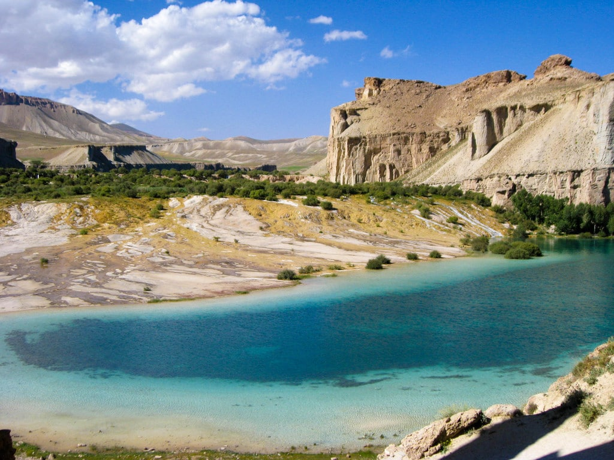

Forestry
Afghanistan's timber has been greatly depleted, and since the mid-1980s, only about 3% of the land area has been forested, mainly in the east. Moreover, the distribution of the forest is uneven, and most of the remaining woodland is only found in the Kunar, Nuristan and the Paktia regions in the east of the country. Some steps have been taken in recent years in planting trees across Afghanistan. The natural forests in Afghanistan are mainly of two types: dense forests of oak trees, walnut trees, and many other species of nuts that grow in the southeast, and on the northern and northeastern slopes of the Sulaiman ranges; and sparsely distributed short trees and shrubs on all other slopes of the Hindu Kush.

Fishing
The country has plenty of reservoirs, rivers and streams, which make it a suitable climate for fish farming. Fishing takes place in the lakes and rivers, particularly in Nangarhar Province and in the Helmand River in southern Afghanistan. Fish constitute a smaller part of the Afghan diet today because fish farmers are unable to produce enough fish to keep up with the demands of customers. Most fish and seafood are imported from neighboring Pakistan, Iran, and the United Arab Emirates. There are hundreds of fish farms throughout the country and the largest one is at the Qargha, which supplies fish eggs to the other fish farms. Fish farming has also been launched in the Salma Dam.
Tourism
Tourism in Afghanistan was at its peak in 1977. Many tourists from around the world came to visit Afghanistan, including from as far away as Europe and North America. Each year about 20,000 foreign tourists visit Afghanistan. The country has four international airports, including the Hamid Karzai International Airport, Mazar-e Sharif International Airport, Kandahar International Airport and Herat International Airport. It also has several smaller airports throughout the country. The city of Kabul has many guest houses and hotels, including the Serena Hotel, the Hotel Inter-Continental Kabul, and the Safi Landmark Hotel. Guest houses and hotels can also be found in the other cities, including in Bamyan
